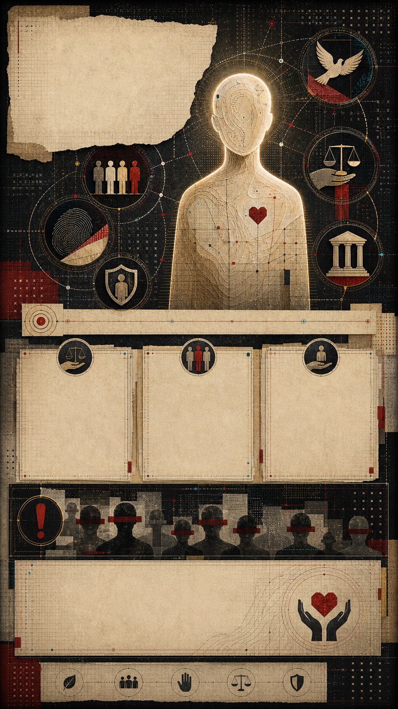

La dignidad humana
Valor inherente de toda persona: no depende del Estado, la nacionalidad, el mérito, la utilidad social ni la opinión pública.
No se concede
No se pierde
Obliga a proteger
Universalidad
Igualdad
No discriminación
Interdependencia
Reparación
Núcleo
Valor inherente de toda persona.
- No se concede por autoridad.
- No depende de mérito, origen o utilidad.
- Impide reducir vidas a expediente o estadística.
Pregunta: ¿se reconoce humanidad completa?
DUDH, art. 1Capas
Tres planos inseparables.
- Ética: la persona es fin, no instrumento.
- Jurídica: derechos iguales y exigibles.
- Política: límite real al abuso de poder.
Pregunta: ¿protege todos los planos?
Viena 1993Estado
La dignidad exige acción pública.
- Respetar: no vulnerar derechos.
- Proteger: impedir abusos de terceros.
- Garantizar y reparar el daño.
Pregunta: ¿hay justicia y reparación?
Constitución, art. 1Se niega cuando...
- hay tortura o trato degradante
- la diferencia se usa para excluir
- la pobreza extrema se normaliza
- el daño queda sin investigación
- la persona pierde voz pública
- el poder decide quién cuenta
La dignidad es el límite que impide que el poder decida quién cuenta como persona.
Pregunta guía: ¿la persona está siendo tratada como fin o como instrumento?
Fuentes: DUDH, art. 1 · Declaración de Viena, 1993 · Constitución mexicana, art. 1 · CDHDF/CDHCM · Christian Courtis